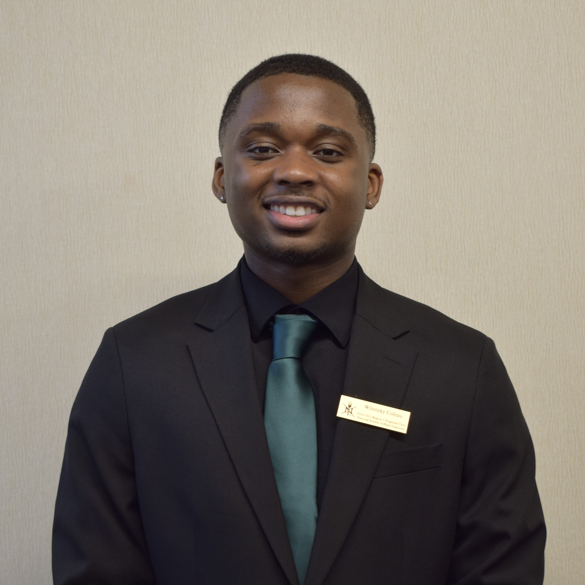
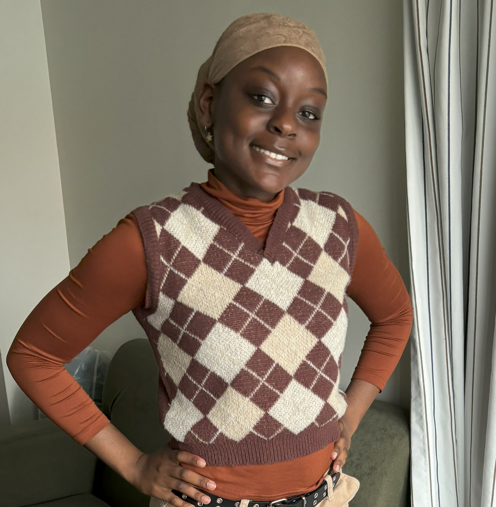

Testimonials

“ As a freshman coming into college I was clueless to many aspects of the professional world. NSBE showed me the value of networking, self marketing, and the skills I needed to succeed in my desired career. I was able to secure an electrical engineering internship at Dupont, and a project engineering internship at Gilbane directly through NSBE. ”
Joshua Szala
President of NSBE

“ To say that the NSBE Stony Brook Chapter changed the course of my life would be an understatement. With getting professional training and experience from mentors, alumni, and getting to go to conferences. I was offered more opportunities than I could ever imagine. Without joining this organization, I can confidently say I wouldn’t be where I am today. ”
Wilensky Coleau
Region 1 Programs Chair

“ My journey with NSBE began with an invitation to be on my chapter’s BEYA 2024 planning committee. Starting with my experience at BEYA, I was exposed to a multitude of opportunities to explore the STEM industry, grow my professional skills and expand my network. The resources that NSBE has to offer has guided me towards achieving my aspirations in the STEM field. I look forward to using the tools I’ve gained as Public Relations Chair to fulfill NSBE’s mission statement! ”